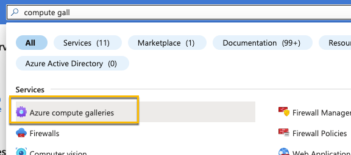
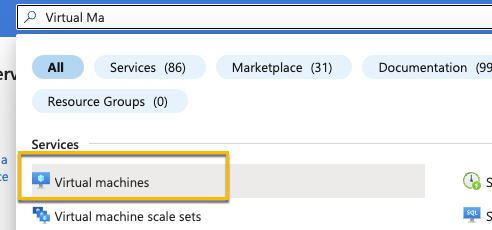
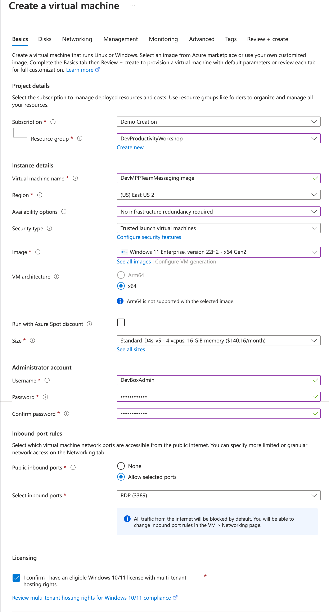
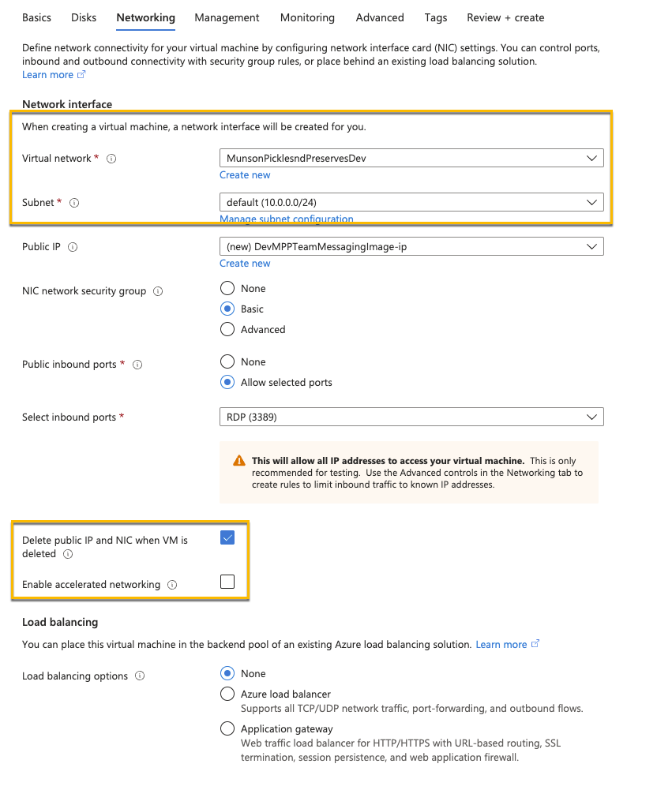
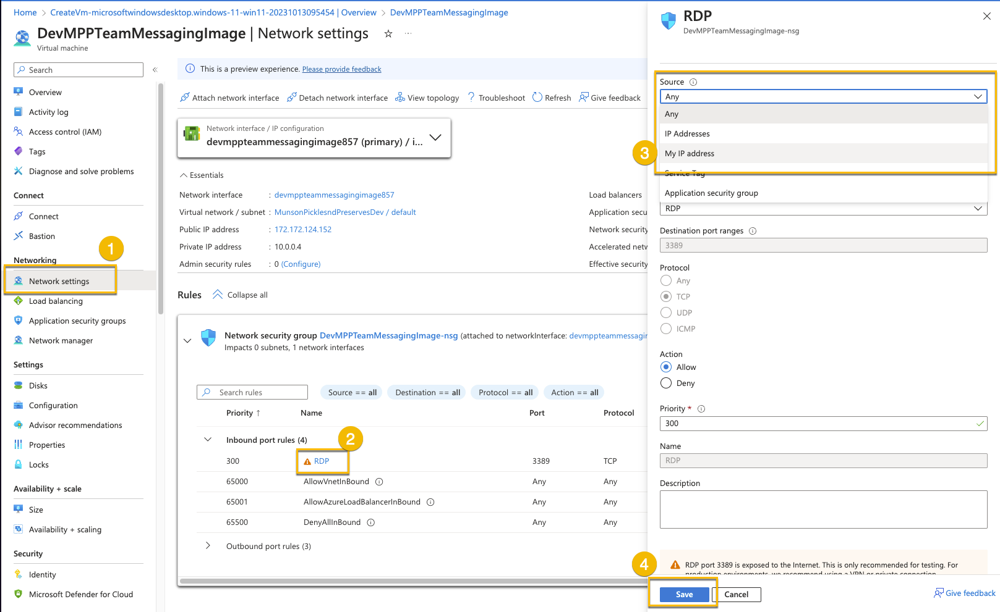
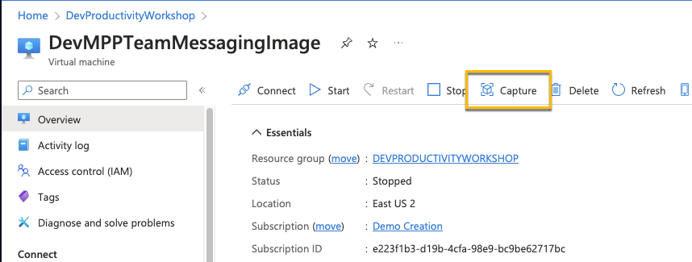
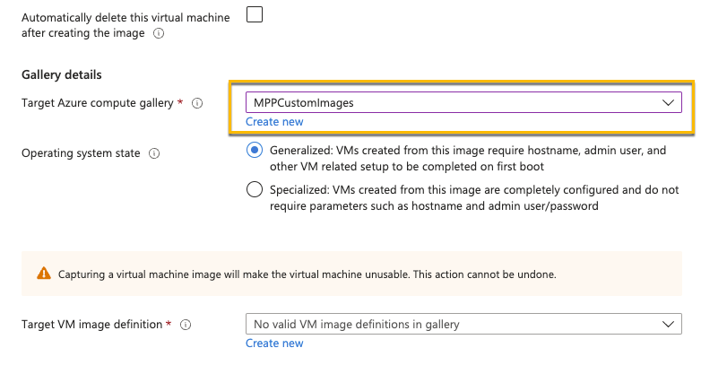
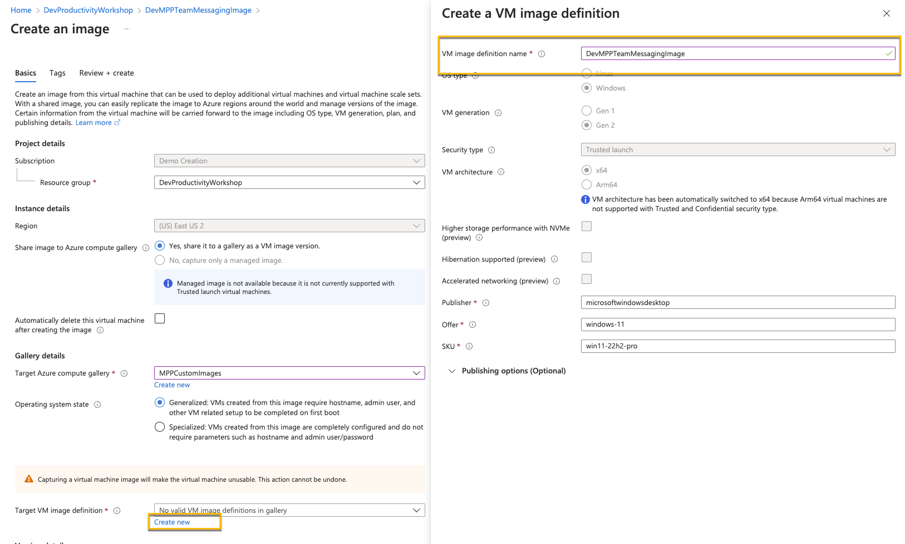
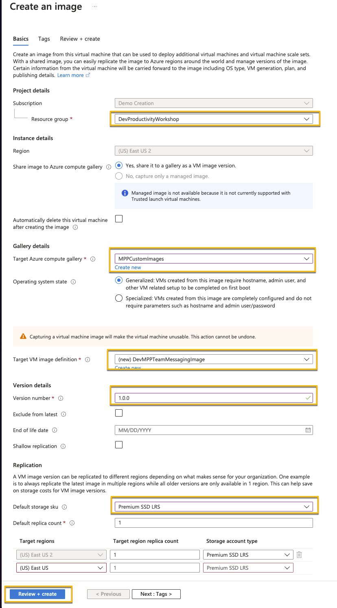

In the Azure Portal create a new Azure Compute Gallery

Configure the following properties. On the Sharing Tab you can keep the defaults. Create the Gallery.
![Compute Gallery Configuration]../Media/ComputerGalleryBasics.png)
Now creating a Windows 11 VM

For the settings
Basics:
Same Resource Group you’ve been using
Virtual Machine name: DevMPPTeamMessagingImage
Availability options: No infrastructure redundancy required
Security type: Trusted launch virtual machines
Images: Windows 11 Enterprise, version 22H2 - x64 Gen2
Note: Make sure you select enterprise and not pro. Pro is not supported for Dev Box.
Size: Standard_D4s_v5
Username: DevBoxAdmin
Password: something you’ll remember
Licensing: Confirm

Disks:
Do nothing
Networking:
Make sure it’s connected to the network you created in the last task
Check “Delete public IP and NIC when a VM is deleted”:
Uncheck “Enable accelerated network”

Management, Monitoring, Advanced
Do nothing and take the defaults
Create the VM
Configure the network to only allow RDP access form you IP address
Under the VM Network settings click RDP in the Network Security Group. Set Source to “My IP address” and select Save

RDP Into the box and download/install the software.
These are all pretty straight forward, just make sure they all get installed for all users
Before running sysprep, shut down the VM and take a snapshot. Once you perform a sysprep you can’t start the VM back up again without using this snapshot.
An error with Docker after the install is fine, just ignore it and do the sysprep
After the Windows machine shuts down due to sysprep, navigate to your virtual machine in Azure.
Select Capture

Select the Azure computer gallery you created in Task 1

Create a new Target VM image definition

Set the Version number to 1.0.0
Set Default storage SKU to Premium SSD LRS
The configuration should look like this. Then create the image

-Note: This step can take some time to complete. If it hasn’t completely after about 20 minute, students can proceed to Exercise 2 and use their own machines. They can check on that status periodically, and once it completes, move on to Task 3. It’s OK to use their own machine for Day 1 and use the Dev Box on day 2.